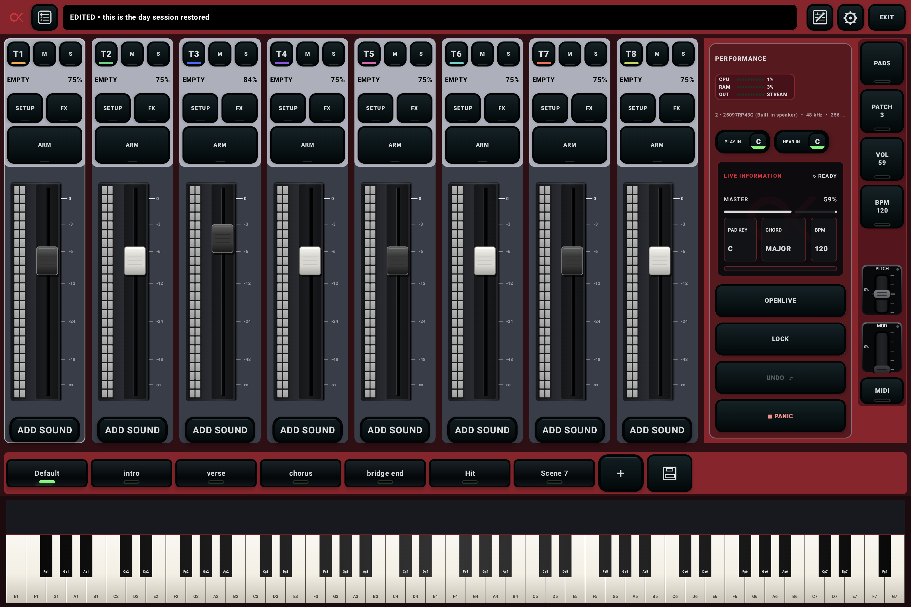
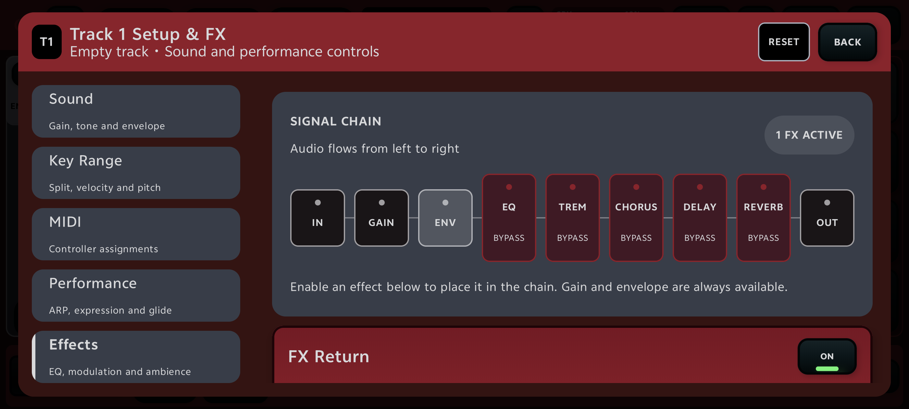
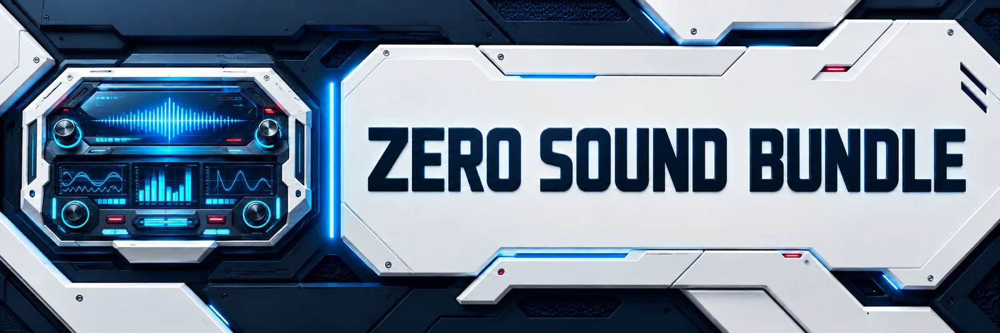

Build the set
Arrange songs as patches inside setlists, in the exact order you’ll play them.
Layer sounds, build scenes, play drums and backing tracks, follow your lyrics, and record the performance. Your Android keyboard workspace, from rehearsal to the stage.

OpenKeys keeps preparation structured and performance simple. Build once, then play the show without hunting through menus.
Arrange songs as patches inside setlists, in the exact order you’ll play them.
Layer SoundFonts, define key ranges, balance the mixer, and tune each effect chain.
Turn verse, chorus, bridge, and ending states into scenes you can recall instantly.
Use MIDI controls, lyrics, scene cues, and performance lock to keep your hands focused.
Every channel is a playable layer. Split the keyboard, transpose, shape velocity and sustain, then build a musical balance with effects that belong to the sound.
Experimental tracks 9–12 use basic playback, 32 voices each, and small SF2 files. Pro unlocks selected advanced tools.

Grand and Pad, seven Essentials SF2s including Japzki Bells, and eleven OpenDrums kits are included with installation. Explore optional Aneira, TheRedPiano, Darchrow, and Zero collections inside the app.
Acoustic, rock, hip-hop, R&B, house, hybrid, and electronic kits. OpenDrums operation requires Pro.
Counts refer to SF2 files, not individual presets. Aneira downloads above are free; in-app access requires Pro.
Discover Darchrow and Zero. Preview the sound, explore the instruments, and add the collection that fits your rig.
120 SoundFonts for your next patch.
Requires OpenKeys Pro
Separate one-time collection purchase
120 of 120 instruments
Download sounds inside OpenKeys after purchasing the collection.
No matching instruments. Try another name or clear the search.
Already own it? Use Restore Purchases in the library with the Google Play account used for purchase.
See the current local price in OpenKeys. Buying Darchrow does not unlock Zero.
Get OpenKeys on Google Play ↗
120 SoundFonts to explore.
Requires OpenKeys Pro
Separate one-time collection purchase
120 of 120 instruments
Download sounds inside OpenKeys after purchasing the collection.
No matching instruments. Try another name or clear the search.
Already own it? Use Restore Purchases in the library with the Google Play account used for purchase.
See the current local price in OpenKeys. Buying Zero does not unlock Darchrow.
Get OpenKeys on Google Play ↗Recall saved mix states with smooth transitions and MIDI triggers. A per-patch toggle lets keyboard split ranges change with each scene.

Play sustained SoundFont pads with harmony, open voicing, swell, and crossfades. Pro adds seven Audio/EX pad sounds and advanced processing.
Organize lyrics and chords, scan images or PDFs, and link song parts to scenes. Pro includes a performance view with scrolling and pedal controls.
Sixteen pads, eleven included kits, WAV imports, recorded sequences, and ten Backing styles—from Worship to Bossa Nova.
Meet OpenDrums →Capture one stereo master track, review L/R waveforms, and save or share WAV audio. Screen + app-audio video is available on supported devices.
OpenRecord features →Play MIDI through your current sounds or stream audio backing tracks. Loop, seek, adjust speed, and transpose MP3 playback.
Explore the player →Tools for building sounds, preparing your set, and performing live.
See the state of your rig at a glance. Lock edits before the first note. Keep Panic close. Monitor audio health while you play the busiest part of the set.
Choose the phone or tablet guide for step-by-step lessons and your first performance.
Build one playable piano-and-pad patch.
OPEN GUIDE →OpenPresent turns camera scans, screenshots, PDFs, or pasted text into large, readable browser presentations. Review the OCR, divide the text into sections, and present from any screen.
Version 0.1.0 · Windows installer package · Android and iPhone users can install from the web app using Add to Home Screen.
Welcome everyone. Today we will explore a simple idea.
[Three Ideas]Notice what matters.
Make the next step clear.
Keep moving together.
Unlock OpenKeys Pro with a single purchase—permanent access, with no recurring subscription.
Google Play shows the current local price and applicable taxes before purchase. Darchrow and Zero sound collections are separate purchases and require Pro.
OpenKeys brings your sounds, songs, scenes, and controls into one focused Android performance workspace.
Get OpenKeys on Google Play ↗